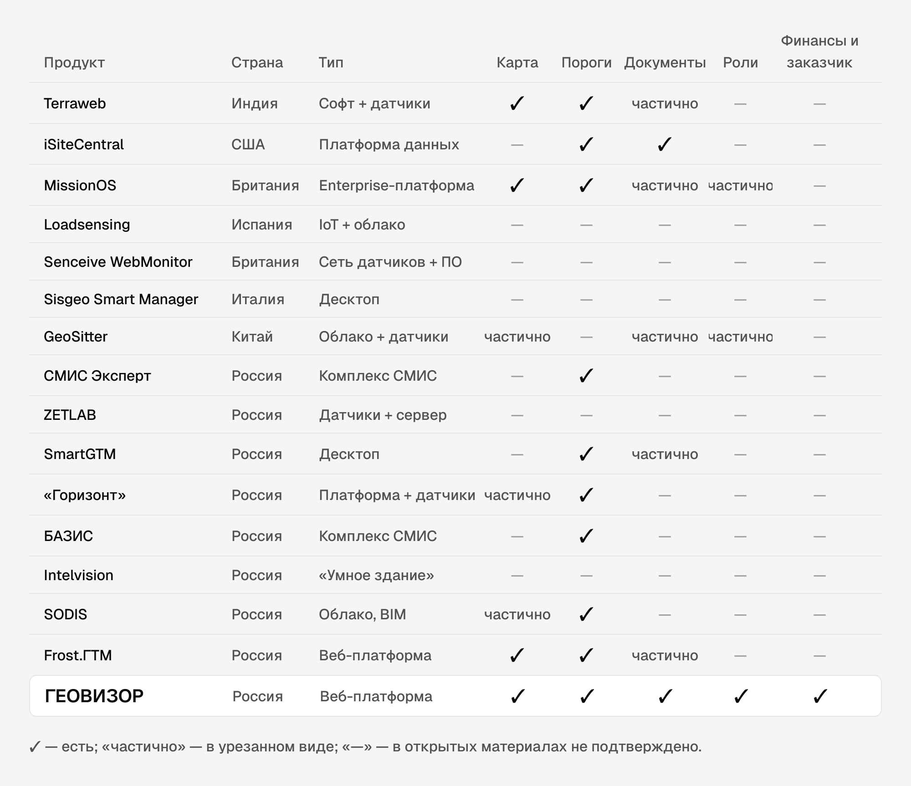

Прежде чем рисовать, мы разобрали, что уже есть на рынке. В выборку вошли 15 продуктов: 7 зарубежных и 8 российских. Смотрели открытые материалы вендоров и их интерфейсы: скриншоты нашлись у 12 продуктов из 15.
Семь вопросов к каждому продукту
- Кто пользователь и различаются ли права у разных участников?
- Есть ли карта или схема объекта с состоянием точек?
- Как устроены пороги и оповещения?
- Где живут документы и связаны ли они с данными?
- Есть ли финансовый контур и доступ для заказчика?
- Как данные попадают из поля: ручной ввод, беспроводные датчики?
- Привязан ли софт к приборам своего производителя?
Выборка
| Продукт | Страна | Тип | Что сильное | Чего нет |
|---|---|---|---|---|
| Terraweb (Encardio-rite) | Индия | Софт + свои датчики | Приём разнородных данных, карта, схема объекта | Ролей, финансов, заказчика |
| iSiteCentral (Geocomp) | США | Платформа данных | Документы рядом с датчиком, аудит | Ролевой модели; продаётся со своими услугами |
| MissionOS (Maxwell GeoSystems) | Великобритания | Enterprise-платформа | «Один хаб для всех участников», фильтр ложных тревог | Тонкой настройки прав; рассчитан на мегапроекты |
| Loadsensing (Worldsensing) | Испания | IoT + облако | Беспроводные датчики для труднодоступных мест | Документов и ролей |
| WebMonitor (Senceive) | Великобритания | Сенсорная сеть + визуализация | Надёжная сеть, открытость к интеграции | Управления проектом |
| Smart Manager (Sisgeo) | Италия | Десктоп под свои приборы | Глубокая связка с приборами | Облака, многопользовательской работы |
| GeoSitter | Китай | Облако + свои датчики | 2D/3D, чужие приборы, заявлен контроль доступа | Деталей ролей |
| СМИС Эксперт | Россия | Программно-аппаратный комплекс | Регуляторный стандарт для опасных объектов | Стройки как процесса, ролей проекта |
| ZETLAB | Россия | Датчики + серверный софт | Знаковые объекты, открытый протокол | Ролей, документов |
| SmartGTM (РУСГЕОТЕХ) | Россия | Десктоп, клиент-сервер | Сверка с проектом, прогноз, ручной ввод | Облака, ролей |
| «Горизонт» | Россия | Платформа + датчики | Датчики сопоставлены с конструкциями на 3D | Ролей, финансов |
| БАЗИС | Россия | Комплекс в составе СМИС | Диспетчерская, интеграция с МЧС | Проектного контура |
| Intelvision | Россия | Платформа «умного здания» | Эксплуатация и диспетчеризация | Стройки, ролей |
| SODIS (СОДИС Лаб) | Россия | Облако, BIM, без привязки к приборам | Самый зрелый российский аналог | Ролевой матрицы, финансов |
| Frost.ГТМ (Симмэйкерс) | Россия | Веб, без привязки к приборам | Поле температур на плане, реестр инцидентов, конструктор отчётов | Ролей (в интерфейсе один «Администратор»), финансов |

Сводка по группам
| Группа | Карта или план | Пороги и оповещения | Документы | Роли с разными правами | Финансы и заказчик |
|---|---|---|---|---|---|
| Зарубежные «прибор + софт» | частично | частично | частично | — | — |
| Зарубежные платформы данных | частично | ✓ | частично | частично | — |
| Российские СМИК/СМИС | частично | ✓ | — | — | — |
| Российский софт мониторинга | ✓ | ✓ | частично | — | — |
| ГЕОВИЗОР | ✓ | ✓ | ✓ | ✓ | ✓ |
✓ — есть у большинства продуктов группы; «частично» — у части или в урезанном виде; «—» — в открытых материалах не описано.
Что стало стандартом
- Веб-платформа с графиками и картой объекта
- Оповещение при превышении порога
- Приём данных из разных источников, включая ручные замеры
- Отчёты и подтверждающие документы рядом с показаниями
Без этого продукт в отрасли всерьёз не рассматривают. В ГЕОВИЗОРЕ всё это — база, а не отличие.
Вторая норма рынка — связка «свои датчики + софт к ним». Софт без привязки к приборам встречается редко: iSiteCentral и MissionOS за рубежом, SODIS и Frost.ГТМ в России. ГЕОВИЗОР устроен так же: интерфейс строится вокруг точки контроля, а не вокруг прибора конкретного производителя.
Незанятые ниши
- Роли. Ни один из 15 продуктов не описывает модель, где у участников разные права. Ближе всех MissionOS с идеей общего хаба, но настройка прав не раскрыта.
- Финансы. Ни у кого нет связи показаний с договорами, актами и оплатой.
- Заказчик. Обычно он получатель PDF, а не пользователь системы.
- Глубина структуры. Больше двух уровней («объект → точка») нет ни у кого. Frost.ГТМ кладёт скважины, марки и контуры сооружений в одну плоскую сцену.
Как это повлияло на решения
| Что увидели | Что сделали |
|---|---|
| Пользователь у конкурентов по сути один | Одна структура на шесть ролей, матрица прав у Администратора |
| Заказчик ждёт PDF, финансы в другой системе | Заказчик и ФЭО — пользователи со своими флоу |
| Документы привязаны к датчику или отсутствуют | Общая база документов, проект и узел — привязки, согласование по маршруту |
| Плоская сцена на плане | Иерархия из четырёх уровней. Цветовое поле на плане взяли у Frost.ГТМ, но для деформаций и со ступенями ровно на порогах |
| Оповещение есть почти у всех | Отличие — в следующем шаге: чат узла, задача по точке, приёмка работы |
Ограничения
Анализ по открытым источникам. Ролевые модели вендоры почти не публикуют, поэтому выводы о ролях — реконструкция по описанию функций. Для точной картины стоит запросить демо у MissionOS, iSiteCentral и GeoSitter — они ближе всех к нашей модели. Вендоры мониторинга трубопроводов (целостность труб, утечки) в выборку не вошли.